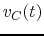
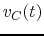

Next: About this document ...
E84 Home Work 7
- Find the current
 through resistor
through resistor  after the
switch is closed at
after the
switch is closed at  , assuming the input is a DC voltage and the
circuit is already in steady state before .
(Hint: current through an inductor cannot change instantaneously.)
, assuming the input is a DC voltage and the
circuit is already in steady state before .
(Hint: current through an inductor cannot change instantaneously.)

- In the circuit below,
 ,
,  ,
,  ,
,
 , . Assume before the switch is closed at , the
system is already stablized. Find current
, . Assume before the switch is closed at , the
system is already stablized. Find current  through
through  and
voltage across .
and
voltage across .

- In the circuit below,
 ,
,  ,
,  ,
,
,
,  , . Assume before the switch
is closed at , the system is already stablized. Find voltages
, . Assume before the switch
is closed at , the system is already stablized. Find voltages
 and
and  across capacitors
across capacitors  and , respectively.
(Hint, and are two capacitors in series with an equivalent
capacitance is
. and have share the same
time constant
and , respectively.
(Hint, and are two capacitors in series with an equivalent
capacitance is
. and have share the same
time constant  .)
.)

- In the circuit below,
 ,
,  , ,
,
, ,
,  , . The circuit is in steady state initially when
the switch is at position 2 (not connected). Find  and for the
following two independent cases:
, . The circuit is in steady state initially when
the switch is at position 2 (not connected). Find  and for the
following two independent cases:
- after the switch is changed to position 1 at ;
- after the switch is changed to position 3 at ;

Next: About this document ...
Ruye Wang
2008-03-19